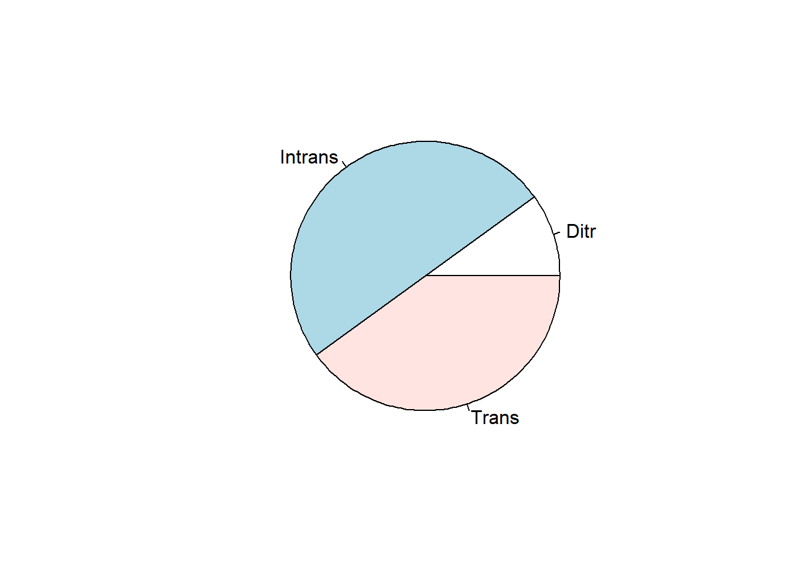
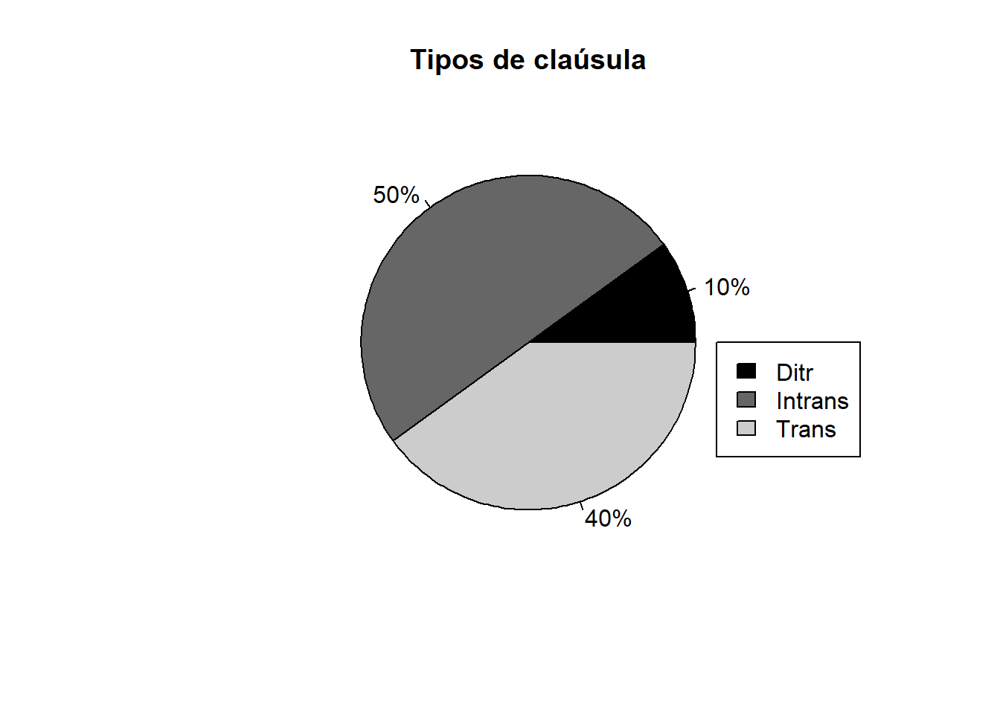
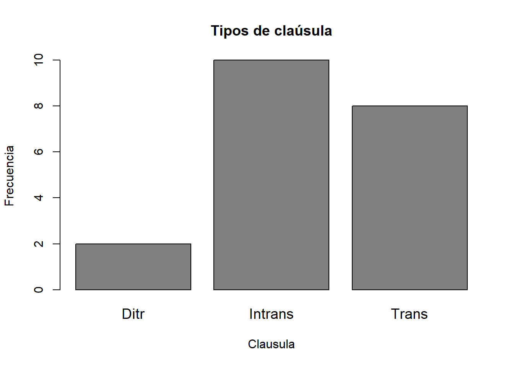
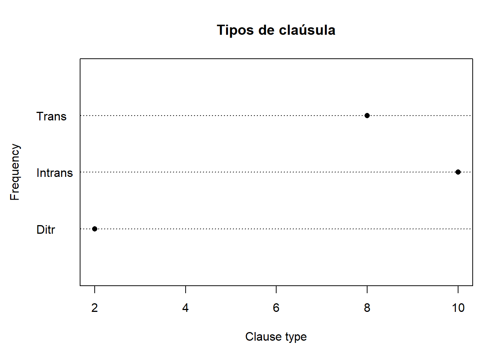

load("/Users/mycomputer/tablas/Rling_workspace.RData")Estadística para lingüistas
Proporciones y visualización de datos
Resultados de aprendizaje esperados
Aprender a calcular proporciones
Crear gráficos y conocer técnicas de visualización de variables cualitativas
Datos
- Descargue el archivo
Rling_workspace.RDatay guárdelo en una carpeta. Este archivo contiene datos (tablas) lingüísticos. - Cargue el conjunto de datos con la función
load()
Nota: Tenga en cuenta que la función
load()no sirve para abrir tablas. En este caso está abriendo un conjunto de datos de un paquete.
El programa R funciona con paquetes de código que agrupan rutinas de programación para hacer tareas específicas como aplicar una prueba estadística, realizar diagramas, entre otras. Por ejemplo, para hacer figuras con colores y rótulos ajustables vamos a usar el paquete ggplot2 :
install.packages("ggplot2")Ahora solo debemos cargar el paquete. En la siguiente línea, he decidido usar # para bloquear la instalación del paquete ggplot2, pues ya está instalado en mi computador y solo quiero cargar la librería:
#install.packages("ggplot2")
library(ggplot2)Tabla
Vamos a abrir la tabla sent con la función data:
data(sent) #carga los datosWarning in data(sent): data set 'sent' not foundCon la función head() obtenemos un resumen de los datos:
head(sent) #resume los promeros casos clause subj
1 Trans Hum
2 Trans Abstr
3 Ditr Abstr
4 Trans Hum
5 Intrans Abstr
6 Intrans HumResumen
Para averiguar cuántos casos hay por cada variable con la función summary() :
summary(sent) clause subj
Ditr : 2 Abstr : 5
Intrans:10 Animal: 1
Trans : 8 Hum :11
MatObj: 3 Para averiguar cuántos casos hay para la variable clause de la tabla sent:
summary(sent$clause) Ditr Intrans Trans
2 10 8 Extraer frecuencias
Resumen de la variable clause:
summary(sent$clause) Ditr Intrans Trans
2 10 8 La función table() también nos permite extraer frecuencias:
table(sent$clause)
Ditr Intrans Trans
2 10 8 1. Calcular proporciones
Las proporciones varían entre 0 y 1.
- Creamos una variable especificando la tabla y la columna de nuestro interés:
sent.t <- table(sent$clause)- Calculamos las proporciones con
prop.table()
prop.table(sent.t)
Ditr Intrans Trans
0.1 0.5 0.4 1.1. Calcular porcentajes
Calcular la proporción del nivel Intrans de la variable clause:
mean(sent$clause=="Intrans")[1] 0.5Para convertir las proporciones en porcentajes:
prop.table(sent.t)*100 #Extrae Porcentajes
Ditr Intrans Trans
10 50 40 2. Diagrama de pastel
pie(sent.t)
2.1. Diagrama de pastel con rótulos
Añadimos rótulos:
sent_labels<-prop.table(sent.t)*100 #Proporciones a porcentaje
sent_labels<-paste(sent_labels,"%", sep="") #añade %
sent_labels [1] "10%" "50%" "40%"Cambiamos los colores a escala de grises:
sent_colours<-c("black","grey40","grey80") #escala de grises2.2. Diagrama de pastel con rótulos y escala de grises
Nuevo diagrama:
pie(sent.t, main="Tipos de claúsula", labels=sent_labels, col=sent_colours)
legend(0.9,0,legend=levels(sent$clause), fill= sent_colours)
2.3. Diagrama de barras
barplot(sent.t, main="Tipos de claúsula", col="grey50",cex.names=1.2, xlab = "Clausula", ylab="Frecuencia")
# la función cex.names permite incrementar el tamaño de la fuente2.4. Diagrama de puntos
dotchart(sent.t, main="Tipos de claúsula", xlab = "Clause type", ylab="Frequency", lcolor="black",pch=16, xlimit=c(0,12))
Bibliografía 📚
Gries, Stefan. 2013. Statistic for linguistics with R. A practical introduction. Berlin: Mouton de Gruyter.
Levshina, Natalia. 2015. How to Do Linguistics with R: Data exploration and statistical analysis. Amsterdam: John Benjamins. Capítulo 2, pp. 21-40.
Smith, Bridget J., Beckman, Mary E., and Foltz, Anouschka (2016). Analyzing the sounds of languages. Ohio State University. Tabla 1, y capítulo 0. Recuperado de: [http://hdl.handle.net/1811/77848%5D